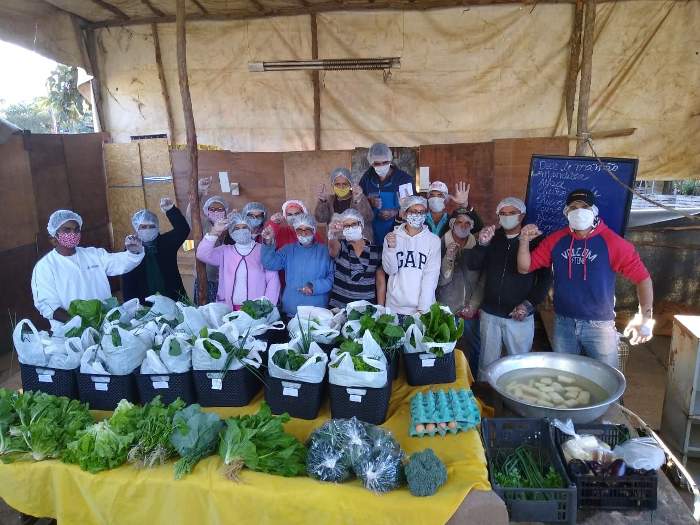
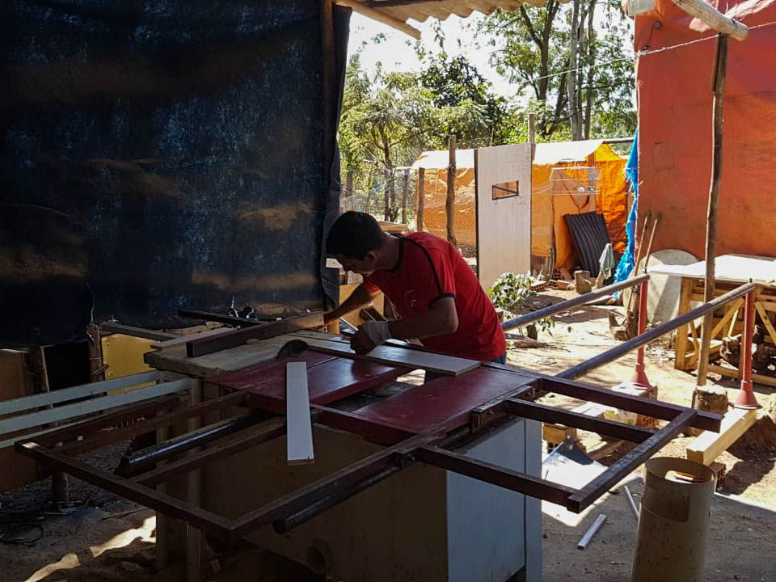
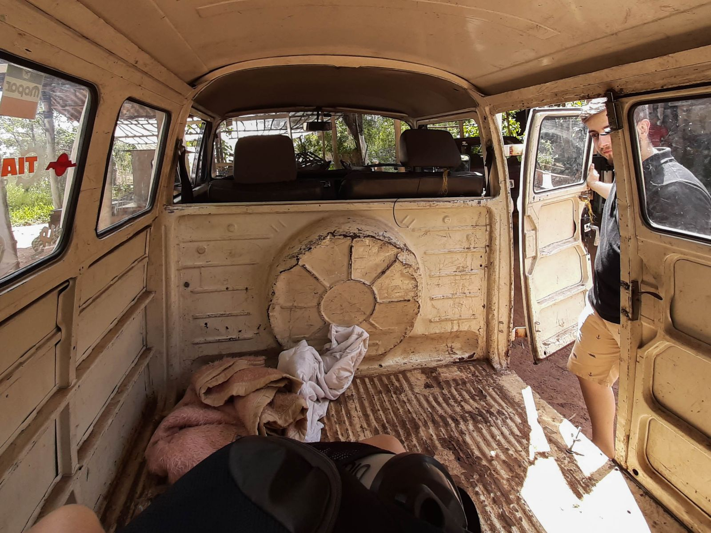
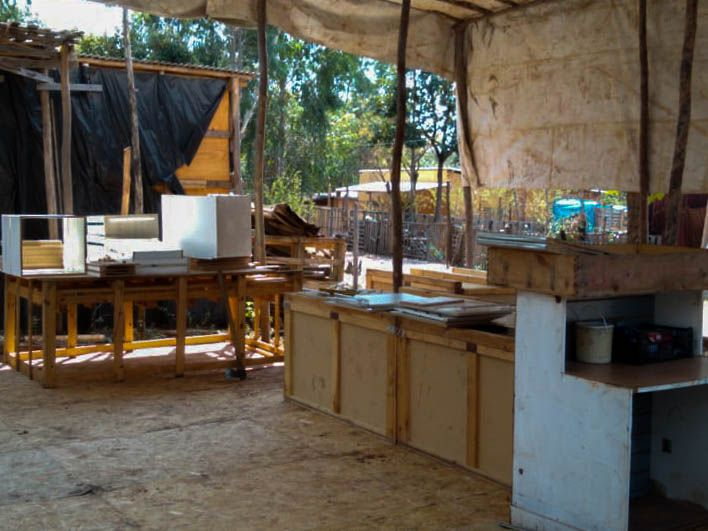
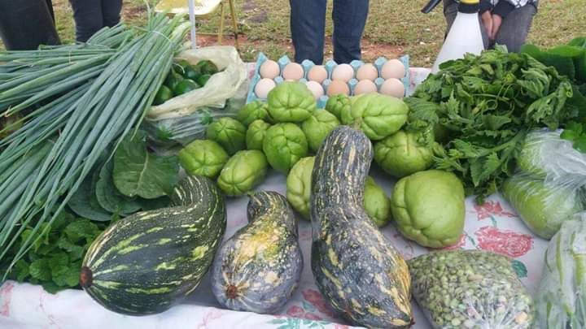
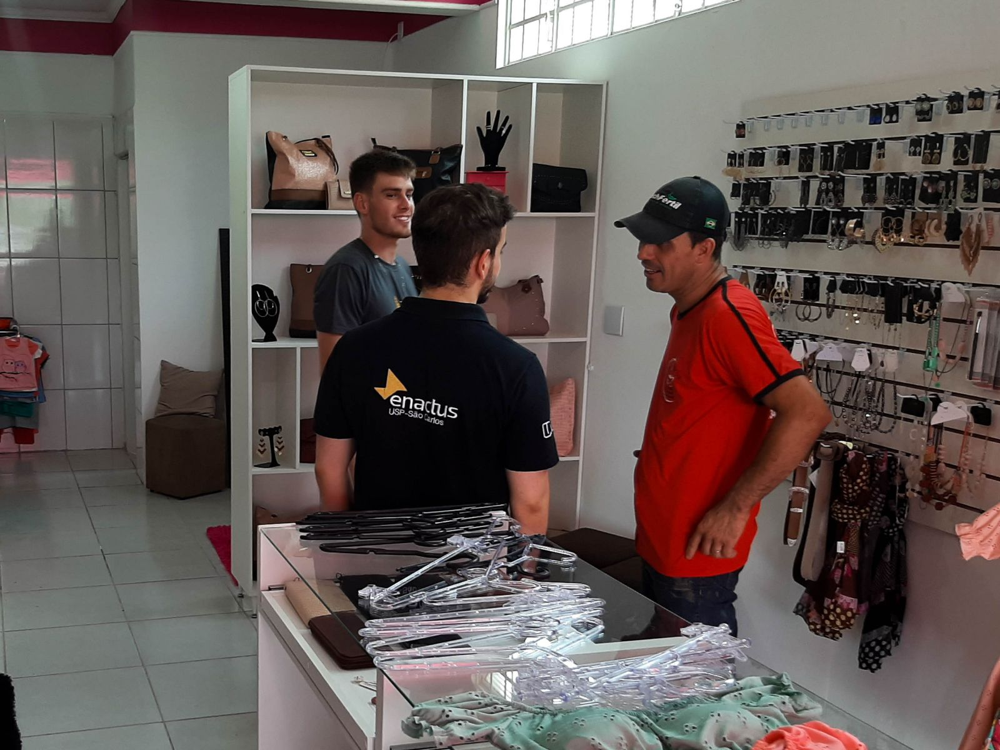
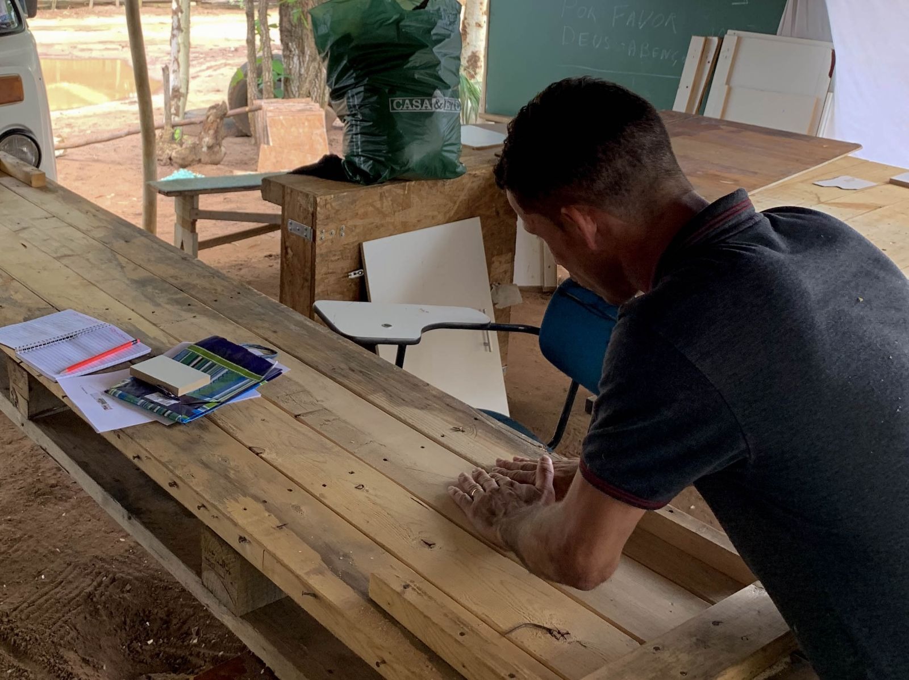
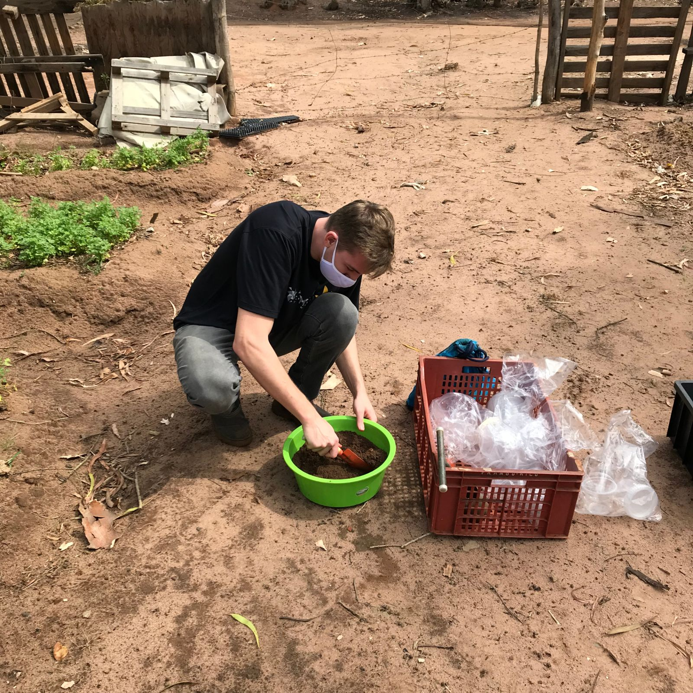

Kairós
Cestas semanais de alimentos produzidos no Acampamento Capão das Antas, entregues em casa e geridas pela própria comunidade.

- Comunidade
- Acampamento Capão das Antas
- Início
- 2019
- Área
- Alimentação e renda
- Modelo
- Cestas semanais com entrega
O projeto
Mais renda e qualidade de vida para quem planta.
Fundado em 2019, o projeto Kairós é realizado junto aos moradores do Acampamento Capão das Antas, localizado no extremo sul de São Carlos. Nossas ações têm como foco principal garantir o aumento da renda e promover maior qualidade de vida para os agricultores a partir de melhorias no sistema de produção e escoamento dos alimentos, além da gestão do modelo de negócio que foi desenvolvido.

O negócio
Cestas semanais com entrega em domicílio.
O negócio criado em conjunto com a comunidade consiste na venda de cestas semanais de alimentos produzidos no Capão com entrega em domicílio. Com uma divulgação bem estruturada e uma logística em contínua melhoria, buscamos ter um crescente número de pedidos e clientes recorrentes.
Diversos treinamentos são realizados para capacitação dos produtores, a fim de que o negócio seja totalmente gerido pela própria comunidade, estimulando também uma maior união entre os moradores.

No campo
Produção segura, diversificada e constante.
Trabalhamos também para profissionalizar as áreas de plantio através de métodos ecologicamente sustentáveis e inovadores. O Kairós busca trazer melhorias na gestão do cultivo, alinhando conhecimento no campo, tecnologia nas vendas e nas saídas dos alimentos em um modelo mais adequado ao perfil da comunidade.

Marcenaria
Uma frente rápida para uma marcenaria emergente.
Outra atuação do projeto consistiu na aplicação de conhecimentos já obtidos em um projeto mais antigo do time (a Marcenaria Novo Sonho, do projeto Melius, entregue em 2019) em uma pequena marcenaria emergente no acampamento.
Essa ação visou estruturar a identidade, o fluxo de caixa e a organização da marcenaria a partir de diversos treinamentos e acompanhamentos. Capacitamos Moisés a realizar o controle de ganhos e despesas de seu negócio, garantindo sua boa gestão. Encerramos nossa atuação nessa frente no início de 2020.

Galeria





Esse projeto terminou. O impacto continua.
Conheça os projetos ativos do time e veja como acompanhar ou apoiar o que estamos construindo agora.